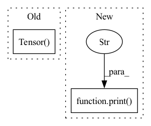

Pattern ID :15375

Before Change
self.lagrange_threshold = 10
self.penalty_lr = lr
self.lamda = Variable(torch.log(torch.exp(torch.Tensor([5]))-1), requires_grad=True)
self.lamda_optimizer = torch.optim.Adam([self.lamda],lr=self.penalty_lr)
self.tune_lambda = True if "lagrange" in self.algo else False
After Change
self.penalty_lr = lr
self.tune_lambda = True if "lagrange" in self.algo else False
if self.tune_lambda:
print("Tuning Lambda")
self.target_action_gap = self.lagrange_threshold
self.log_lamda = torch.zeros(1, requires_grad=True, device=device)
self.lamda_optimizer = torch.optim.Adam([self.log_lamda],lr=self.penalty_lr)
self.lamda = self.log_lamda.exp()
In pattern: SUPERPATTERN
Frequency: 5
Non-data size: 2
Instances
Fragment ID: 52084254
Project Name: hari-sikchi/offline_rl
Commit Name: bf9dfc7b6c75f6f21296e7f7e5190e5abb675603
Time: 2021-10-04
Author: harshitsikchi8@gmail.com
File Name: CQL/cql.py
M Class Name: CQL
N Class Name: CQL
M Method Name: __init__(25)
N Method Name: __init__(23)
M Parent Class:
N Parent Class:
M File Name: CQL/cql.py
N File Name: CQL/cql.py
M Start Line: 195
M End Line: 228
N Start Line: 62
N End Line: 236
'>
Before Change
target = torch.randn(batch_size, C, T, dtype=torch.float)
pattern = random.choices([list(p) for p in P], k=batch_size)
pattern = torch.Tensor(pattern).long()
print("Ground truth pattern: ")
print(pattern)
After Change
input = torch.randint(2, (batch_size, C, T), dtype=torch.float)
target = torch.randint(2, (batch_size, C, T), dtype=torch.float)
print("-"*10, "Negative SI-SDR (PIT)", "-"*10)
criterion = NegSISDR()
pit_criterion = PIT(criterion, n_sources=C)
loss, pattern = pit_criterion(input, target)
'>
Fragment ID: 52084255
Project Name: tky823/dnn-based_source_separation
Commit Name: a2c8fff0b948824663d007770528fa8eaecabcf6
Time: 2021-06-12
Author: 40362510+tky823@users.noreply.github.com
File Name: src/criterion/pit.py
M Class Name: AnonimousClass
N Class Name: AnonimousClass
M Method Name: _test_sink_pit(0)
N Method Name: _test_sink_pit(0)
M Parent Class:
N Parent Class:
M File Name: src/criterion/pit.py
N File Name: src/criterion/pit.py
M Start Line: 327
M End Line: 340
N Start Line: 327
N End Line: 337
'>
Before Change
speech = torch.transpose(torch.Tensor(self.feature_list[index][2]), 0, 1).to(self.device)
speech_len = torch.LongTensor([self.feature_list[index][3]]).to(self.device)
if self.spemb:
spemb = torch.Tensor(self.feature_list[index][4]).to(self.device)
return text, text_len, speech, speech_len, spemb
return text, text_len, speech, speech_len
After Change
speech = torch.transpose(self.ap.audio_to_mel_spec_tensor(wave), 0, 1)
speech_len = torch.LongTensor(speech.shape(1))
if self.spemb:
print("not implemented yet")
raise RuntimeError
return text, text_len, speech, speech_len
def __len__(self):
'>
Fragment ID: 52084253
Project Name: digitalphonetics/ims-toucan
Commit Name: 1e192df888be8f1dc1c20971132b31fe73153b7d
Time: 2021-02-22
Author: florian.lux@ims.uni-stuttgart.de
File Name: TransformerTTS/TransformerTTSDataset.py
M Class Name: TransformerTTSDataset
N Class Name: TransformerTTSDataset
M Method Name: __getitem__(2)
N Method Name: __getitem__(2)
M Parent Class: Dataset
N Parent Class: Dataset
M File Name: TransformerTTS/TransformerTTSDataset.py
N File Name: TransformerTTS/TransformerTTSDataset.py
M Start Line: 14
M End Line: 21
N Start Line: 32
N End Line: 44
'>
Before Change
self.fc1 = Pt/self.Nh
x_flat = np.ones((1,1,Nl,Nc))
x_flat = torch.Tensor(x_flat)
x_flat = x_flat.float()
x_flat = x_flat.to(self.H.device)
(b,c,h,w) = x_flat.size()
if Stat_comp:
After Change
// Pinv = torch.from_numpy(Pinv)
//else:
if Stat_comp:
print("Statistic completion")
Pinv = torch.pinverse(self.H2, rcond=alpha)
else:
Pinv = torch.pinverse(self.H, rcond=alpha)
Pinv = Pinv.float()
'>
Fragment ID: 52084258
Project Name: openspyrit/spyrit
Commit Name: c765ffa67ce6930782e3ae1be7517a692de8a7be
Time: 2021-11-23
Author: sebastien.crombez@univ-lyon1.fr
File Name: spyrit/learning/model_Had_1D_DCAN.py
M Class Name: compNet_1D_size_stat
N Class Name: compNet_1D_size_stat
M Method Name: __init__(11)
N Method Name: __init__(12)
M Parent Class: nn.Module
N Parent Class: nn.Module
M File Name: spyrit/learning/model_Had_1D_DCAN.py
N File Name: spyrit/learning/model_Had_1D_DCAN.py
M Start Line: 1140
M End Line: 1249
N Start Line: 1224
N End Line: 1224
'>
Before Change
train_data.append(torch.Tensor(train_sample["pixels"].numpy()))
train_labels.append(train_sample["label"].numpy())
train_data = torch.stack(train_data,0)
train_labels = torch.Tensor(train_labels)
for val_sample in client_val_dataset:
val_data.append(torch.Tensor(val_sample["pixels"].numpy()))
val_labels.append(val_sample["label"].numpy())
val_data = torch.stack(val_data,0)
After Change
os.makedirs(os.path.join(self.root, "test"), exist_ok=True)
dataset_train, dataset_test = load_emnist(self.root, only_digits=self.only_digits)
print("Start generating datasets...")
if self.split in ["train","val"]:
rand_client_ids = np.random.permutation(len(dataset_train.client_ids))
for i in tqdm(rand_client_ids):
train_path = os.path.join(self.root,"train", "EMNIST_client_{}.pt".format(i))
'>
Fragment ID: 52084256
Project Name: mloptpsu/fedtorch
Commit Name: 7577f1e2efbce9c4cc0bbd149ec88313f35f1cf6
Time: 2021-01-23
Author: mohamadmahdi.kamani@gmail.com
File Name: fedtorch/components/datasets/loader/federated_datasets.py
M Class Name: EMNIST
N Class Name: EMNIST
M Method Name: download(1)
N Method Name: download(1)
M Parent Class: Dataset
N Parent Class: Dataset
M File Name: fedtorch/components/datasets/loader/federated_datasets.py
N File Name: fedtorch/components/datasets/loader/federated_datasets.py
M Start Line: 92
M End Line: 143
N Start Line: 94
N End Line: 137